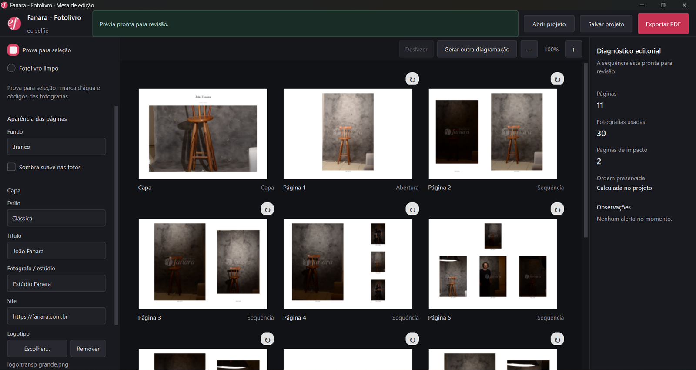
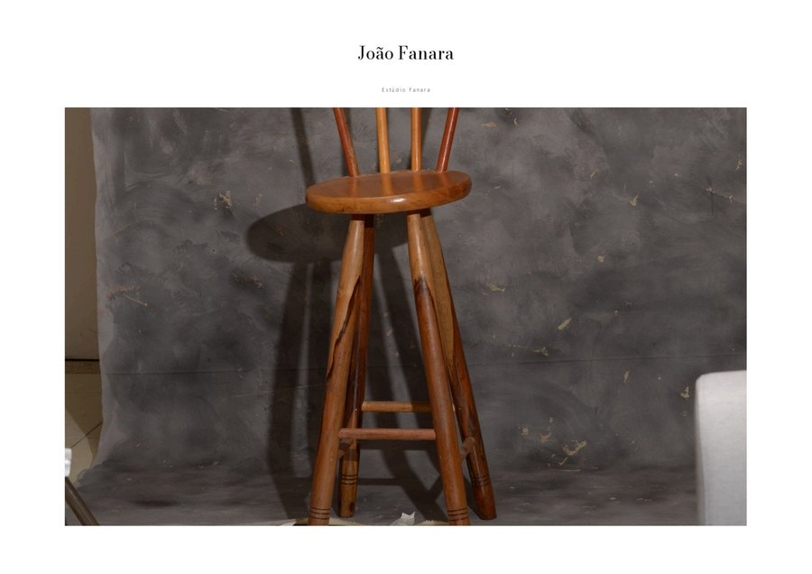
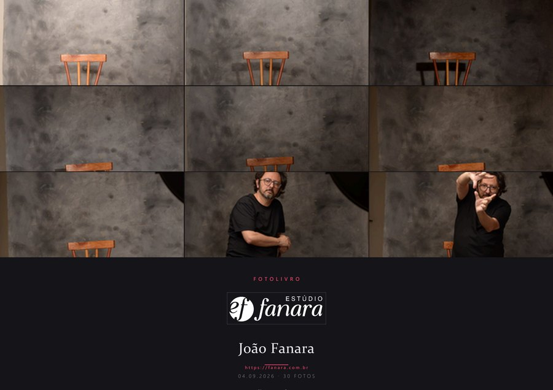
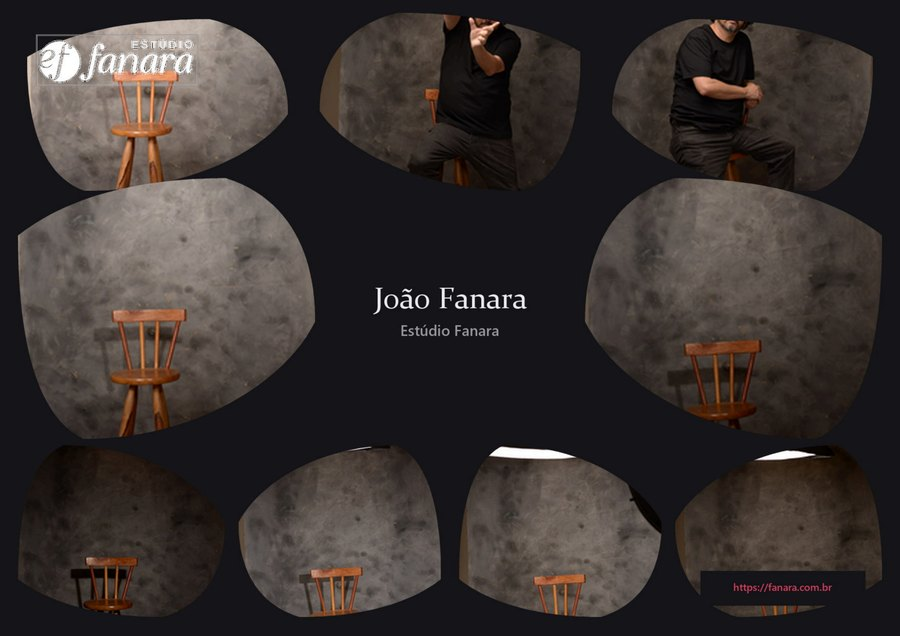
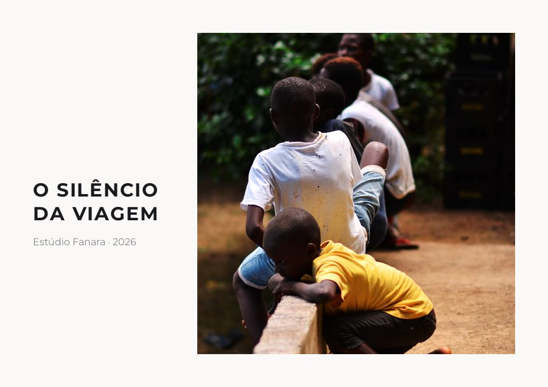
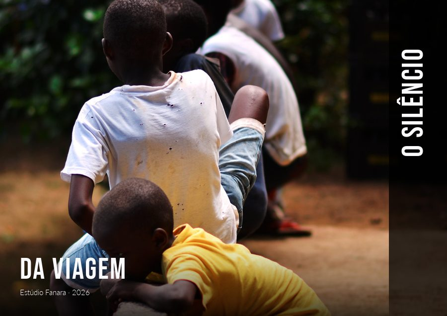
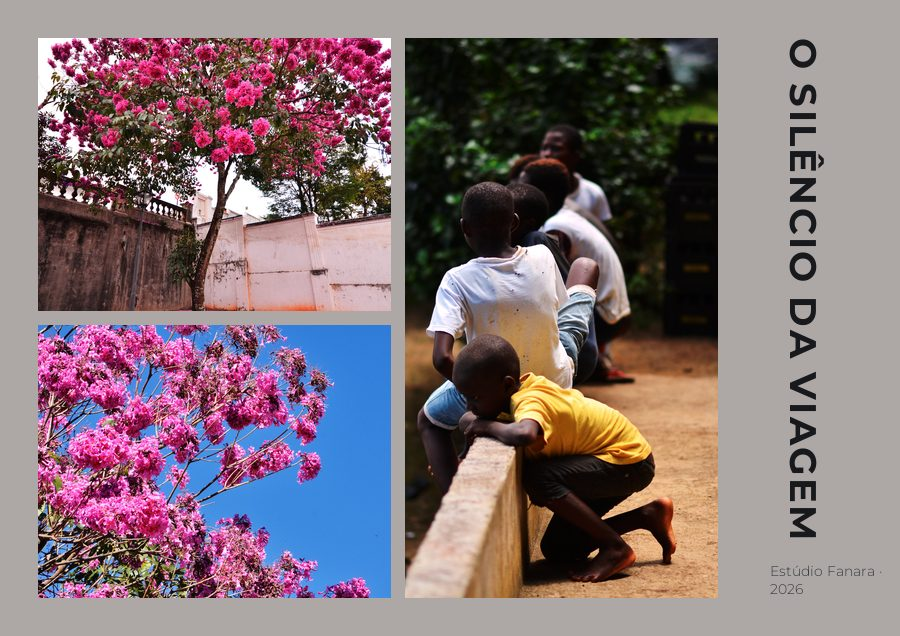
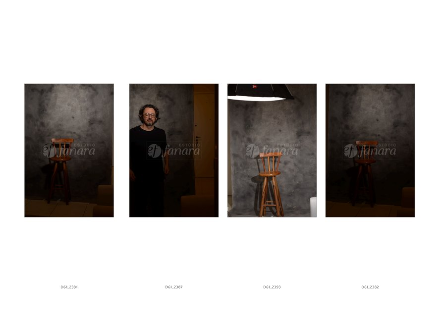
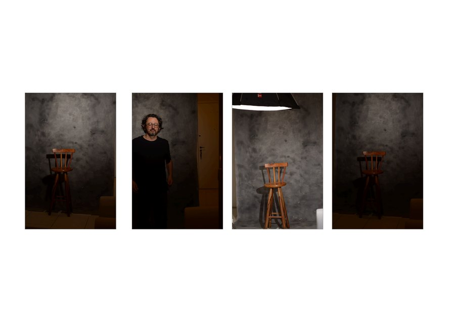

It analyzes the photographs, lays out the pages and exports the PDF as landscape A4. No cropping, stretching or decorative rotation.

Three steps, the same editing desk from start to finish.
Point it at the session folder. JPG or RAW, the app reads the preview the camera already wrote inside the file.
The engine weighs sharpness, exposure and similarity across photos and proposes the full layout, with an editable preview.
Review the preview, swap anything you want, then export. Or save the project and pick it up later without losing anything.
Eleven styles. New projects start on Classic; the eight editorial ones take their background colour from the photograph itself, each with its own typography.

One photograph, title and studio. Drag it, zoom from 100 to 250%, or let automatic framing find the face.

Every photograph in the session, laid out as the cover grid.

Organic shapes arranging the photos around the title.

One framed photograph, geometric type in the column beside it.
A light frame and a serif italic title at the foot of the photograph.

Full bleed, with the condensed title running up the side.
No frame: the title lands on the calmest corner of the image.
Four photographs on a regular grid, title centred below.
Overlapping photographs, like loose prints on the table.

An asymmetric mosaic with the title turned on its side.
Three photographs in sequence, with wide air above.
The same project, two different destinations. The choice is closed on purpose, to keep each delivery's intent clear.

What the client picks from. The watermark is baked into the pixels, not drawn on top, and the file code sits under every photo.

The final delivery. Same layout, no watermark and no code, ready to print or hand over.
The saved project keeps the layout and the path to your photos. Never the photos themselves.
The face detection used to frame the Classic cover runs entirely on your own computer. No photograph is ever sent over the internet.
No. For RAW files, the app reads the JPEG preview the camera already embeds in the file. There is no development step, no color profile, no lens correction, no exposure adjustment.
Photographs fit whole inside each page, with no cropping, stretching or decorative rotation. The only mark ever applied is the watermark, and only in Proof mode.
Yes. No account, no charge, no limit on photos or exports.
No. The app makes no network connection at all. The saved project keeps the layout and the path to your photos in their own folder, never the images.
Windows only, for now.
Free, no account, straight from Windows.
Download free Extract the whole folder and open Fanara - Fotolivro.exe